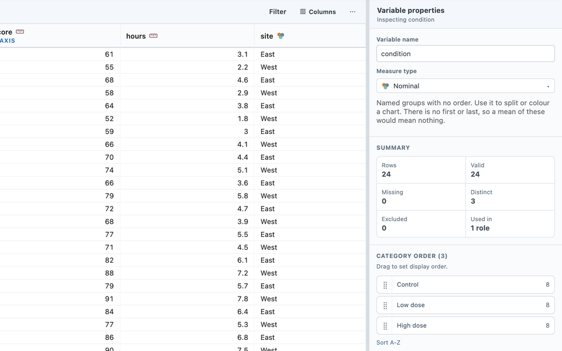
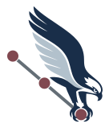
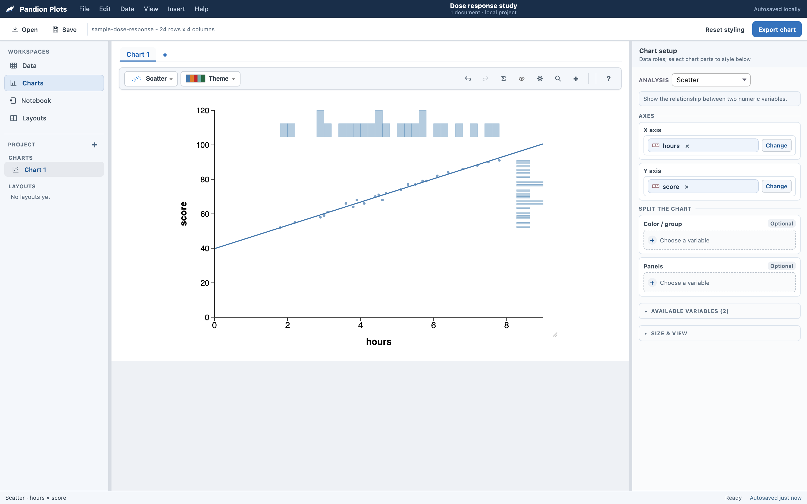
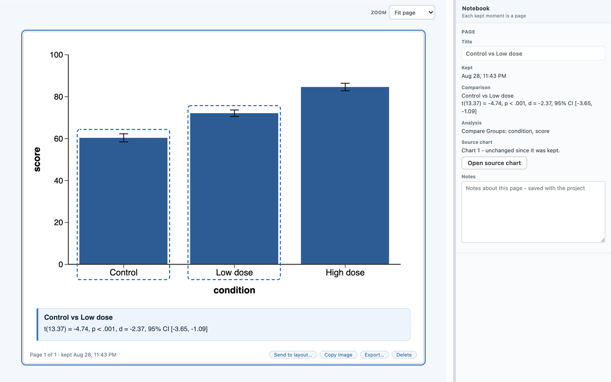
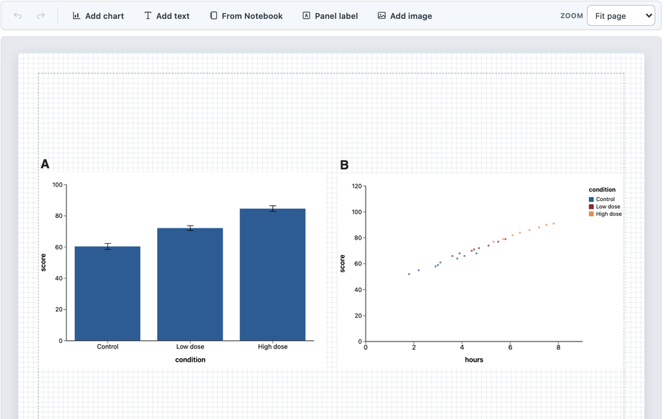

A data workspace that knows nominal from numeric
Give each variable a measure type and the rest follows: which roles it can fill, which charts get suggested, and how its levels are ordered.
Take the two-minute tourPandion Plots is a free, open-source graphing app for researchers, instructors, and students. Import your data, assign variables, and create a polished statistical figure without code. Everything runs locally, so your data stays on your computer.


Clicking a bar opens its settings under the chart, and legends, error bars, and labels open their own settings the same way.
Dragging one bar past its neighbor swaps the two groups in every category, and the legend can be dragged to wherever it fits.
The Add menu holds everything you can put on a chart.
Why Pandion
Some tools are easy, but only go so far. Others can do anything, once you learn to code. So a professor built one with the control of code, and the ease of a click.
From the one-minute story
When you want help, it explains results and design choices in plain language. Experienced users can stay focused on the work; newer users can follow the guidance.
Every dataset has a story in it. But getting it onto the page? That's the struggle. Some tools are easy, but only go so far. Others can do anything, once you learn to code. So a professor built one with the control of code, and the ease of a click.
Pandion Plots. Drop in your variables, and your first draft is already presentable. Want to change something? Just click it. The statistics sit right beside it, explained in plain language. It even checks your graph for common mistakes.
Free, open source, and private. Your data never leaves your computer. Built for research. Designed to teach.
Pandion Plots. Clear statistical figures, without the struggle.
On screen: a hand-drawn collage of paper, pencil and code leads to the real app. Variables are dragged into the chart setup and a grouped bar chart draws itself; clicking the bars opens their settings and recolors them; the Statistics panel explains a p value in plain language; and Check my graph passes all fifteen of its checks. The film ends with the osprey diving along a straight line to its final point.
Comparisons, multiple-comparison corrections, and effect sizes are verified against R, with results stated in APA style.
Build multi-panel layouts and export SVG, PNG, JPG, or vector PDF files, with captions included.
Everything runs on your computer. No accounts, uploads, or cloud processing, and your data never leaves your device. The only thing counted is how often the browser app is used, with one anonymous ping at launch.
Get plain-language interpretations of tests, estimates, and intervals, with definitions in the built-in glossary.
Built-in checks flag truncated axes, difficult color choices, and other issues before you share a figure.
Select your variables and answer a few questions. Pandion recommends suitable chart types and explains why they fit.
Beyond the chart
Pandion supports what comes before and after the chart. Organize and understand your data before you plot, keep a record of what you find as you go, then arrange finished charts into a polished figure for a paper, poster, or presentation.

Give each variable a measure type and the rest follows: which roles it can fill, which charts get suggested, and how its levels are ordered.
Take the two-minute tour
Each page carries when it was kept, your notes, and an honest verdict on whether its source chart has changed since. Kept pages act as snapshots and never update themselves, which is the point.
Take the two-minute tour
Arrange several charts on one page, label the panels, and add titles, notes, or images. Panels placed from your charts stay linked, so an edit to a chart updates the figure.
Take the two-minute tourGet Pandion Plots
The browser, desktop, and portable versions share the same charting workflow and project format, so you can move your work between them.
Current release 3.1.3, GPL-3.0. Release notes
Start immediately. Bring in data from a CSV, an Excel sheet, or a jamovi file and build charts without installing anything. The browser keeps an autosave between visits, and Save writes a project file to your computer.
Run Pandion Plots on macOS or Windows for standard file associations, a familiar desktop workflow, and full offline access.
Choose your downloadUse the same chart engine beside your jamovi analyses, with plots stored in the same .omv file.
Get the moduleDownload the entire app as one self-contained HTML file. Keep it on a USB drive, share it with students, or work offline. No installation is required.
Download HTML app